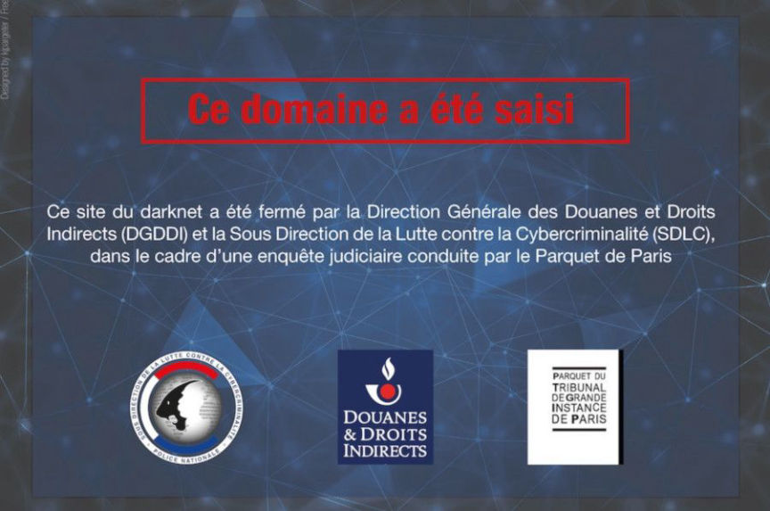
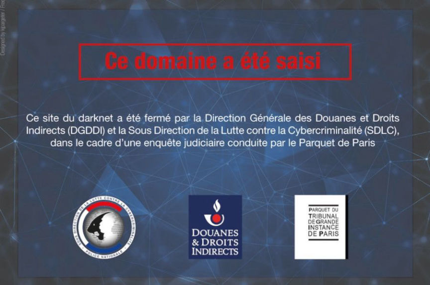

Seizure Banner Update - Authorities Arrest Three Suspected Admins of France's Biggest Darkweb Market
~2 min read | Published on 2019-06-13, tagged Darkweb-Market, Seized using 312 words.
On June 12, French law enforcement arrested the three suspected administrators of the French DeepWeb Market, the largest darkweb market in France. The administrators are facing charges in connection with the drug trafficking that took place on the site and several related crimes.
On June 16, French authorities added a seizure banner to the homepage of the French Deep Web Market.
(H/t to @Cybintelligence on Twitter for finding this)
The seizure banner is translated as follows, according to the same Twitter user:
“This domain has been seized. This darknet site has been closed by the French customs (DGDDI), the French Cybercrime Center (SDLC) due to a judicial prosecution leaded by the public prosecutor’s office of Paris.”
Three people were detained on June 12 as part of an operation aimed at dismantling a major illegal dark web platform that sold drugs, weapons and forged documents, French news outlets reported.
This operation, the second of its kind within a year, targeted the “French Deep Web-Market” or “FDW-Market.” The market was considered one of the most prolific darkweb marketplaces in France with almost 6,000 buyers and 700 vendors.
The suspects were arrested as part of an investigation by the the Central Directorate of the Judicial Police (DCPJ) into the marketplace’s administrators for “complicity in drug trafficking, weapons law violations, scams, forgery , using and supplying false administrative documents,” said the prosecutor in a brief statement to the press.
“A few thousand euros divided into various cryptocurrencies - including bitcoin, litecoin and ether - were recovered by the authorities, as well as prepaid payment cards,” authorities said.
Investigators also opened an investigation into the suspects for criminal conspiracy and cybercrimes.
According to the prosecutor, this operation is the result of surveillance started in early 2018 by Cyberdouane, one of the investigation services of the National Directorate of Intelligence and Customs Investigations (DNRED).
Source: lefigaro.fr
French law enforcement also took down the Black Hand forum in June 2018.
On June 16, French authorities added a seizure banner to the homepage of the French Deep Web Market.
(H/t to @Cybintelligence on Twitter for finding this)
The seizure banner is translated as follows, according to the same Twitter user:
“This domain has been seized. This darknet site has been closed by the French customs (DGDDI), the French Cybercrime Center (SDLC) due to a judicial prosecution leaded by the public prosecutor’s office of Paris.”
Three people were detained on June 12 as part of an operation aimed at dismantling a major illegal dark web platform that sold drugs, weapons and forged documents, French news outlets reported.
This operation, the second of its kind within a year, targeted the “French Deep Web-Market” or “FDW-Market.” The market was considered one of the most prolific darkweb marketplaces in France with almost 6,000 buyers and 700 vendors.
The suspects were arrested as part of an investigation by the the Central Directorate of the Judicial Police (DCPJ) into the marketplace’s administrators for “complicity in drug trafficking, weapons law violations, scams, forgery , using and supplying false administrative documents,” said the prosecutor in a brief statement to the press.
“A few thousand euros divided into various cryptocurrencies - including bitcoin, litecoin and ether - were recovered by the authorities, as well as prepaid payment cards,” authorities said.
Investigators also opened an investigation into the suspects for criminal conspiracy and cybercrimes.
According to the prosecutor, this operation is the result of surveillance started in early 2018 by Cyberdouane, one of the investigation services of the National Directorate of Intelligence and Customs Investigations (DNRED).
Source: lefigaro.fr
French law enforcement also took down the Black Hand forum in June 2018.